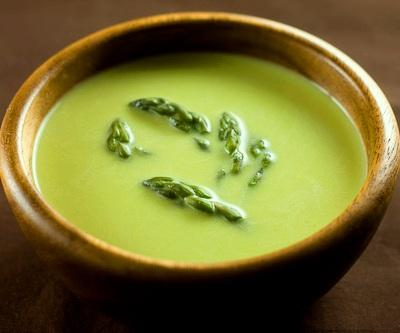

Sopa de espárragos
Ingredientes:
| Cantidad | Productos |
|---|---|
| 1 | Manojo de espárragos verdes |
| 2 | Patatas medianas |
| 1 | Cebolla mediana |
| 1/2 | Litro de agua |
| 150 ml | Crema de leche |
| c/c | Aceite y un poco de mantequilla, sal y pimienta blanca |
Preparación:
- Primero cortamos la cebolla a pedazos y la rehogamos en una cazuela.
- Después, rompemos la parte fibrosa de los espárragos, normalmente se encuentra en el inferior, y aprovechamos la parte superior.
- Los cortamos, también, e incorporamos a la cebolla que hemos sofrito anteriormente.
- A continuación, troceamos las patatas y las añadimos a la cazuela con la cebolla y los espárragos.
- Una vez juntados todos los ingredientes, los mezclamos, cubrimos con agua, salpimentamos y los dejamos hervir durante unos 20 minutos aproximadamente.
- Después, una vez hervidos todos los ingredientes, los trituramos con la batidora eléctrica y los pasamos por un colador. Es recomendable que sea de malla muy fina, ya que así cumple mejor su función y no deja pasar ningún tropezón.
- Finalmente, añadimos la crema de leche para conseguir que la sopa quede más cremosa y ¡buen provecho!